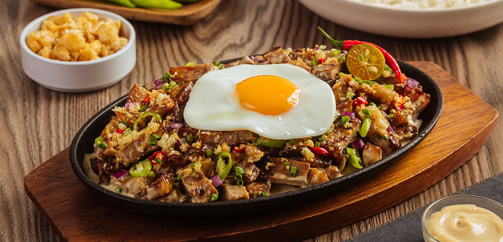

Sizzling Pork Sisig Manila

Description
Let's put a spin on a traditional favorite! An all time beloved classic of crispy chicharon and grilled meats served in a creamy, tangy mayo sauce made extra rich with egg for a mouthwatering pork appetizer.
Ingredients
Prepare the Pork
- Pork Face and ear, cleaned and pre-boiled - 160 g
- Water - 400 ml
- Black Peppercorn - 4 g
- Bayleaf - 0.40 pc
- Knorr Liquid Seasoning - 40 g
- Knorr Pork Broth Base
Marinate Liemo and Grill the Meat
- Pork Liempo - 60 g
- Knorr Liquid Seasoning - 6g
- Black Pepper 0.40 g
- Chicken Liver, seasoned with Knorr Liquid Seasoning, grilled and chopped - 40 g
Mix and Serve Sizzling Pork Sisig
- White Onions, chopped - 40 g
- Green Chilies, chopped - 3 g
- Knorr Liquid Seasoning - 9 ml
- Lady's Choice Real Mayonnaise - 24ml
- Chicharon, crushed for garnish - 10 g
- Calamansi, for garnish - 0.80 pc
- Red Chili, for garnish - 1 g
Preparation
Prepare the Pork ~ 40 minutes
- In a medium-sized stockpot, combine the pork face, ear, water, black pepper, bayleaf, Knorr Liquid Seasoning and Knorr Pork Broth Base.
- Boil and simmer until pork is tender.
- Strain and set aside.
Marinate Liempo and Grill the Meat ~ 35 minutes
- In a mixing bowl, marinate the liempo in Knorr Liquid Seasoning and black pepper for 20 minutes.
- Once ready, preheat the griller.
- Grill the pork face, ear, liempo and chicken liver until done.
- Chop the protein to desired sizes.
Mix and Serve Sizzling Pork Sisig ~ 15 minutes
- In a large mixing bowl, combine the grilled meats, onion, chili, Knorr Liquid Seasoning and Lady's Choice Real Mayonnaise. Mix very well.
- Serve on a sizzling plate.
- Garnish with chicharon, calamansi and chili.